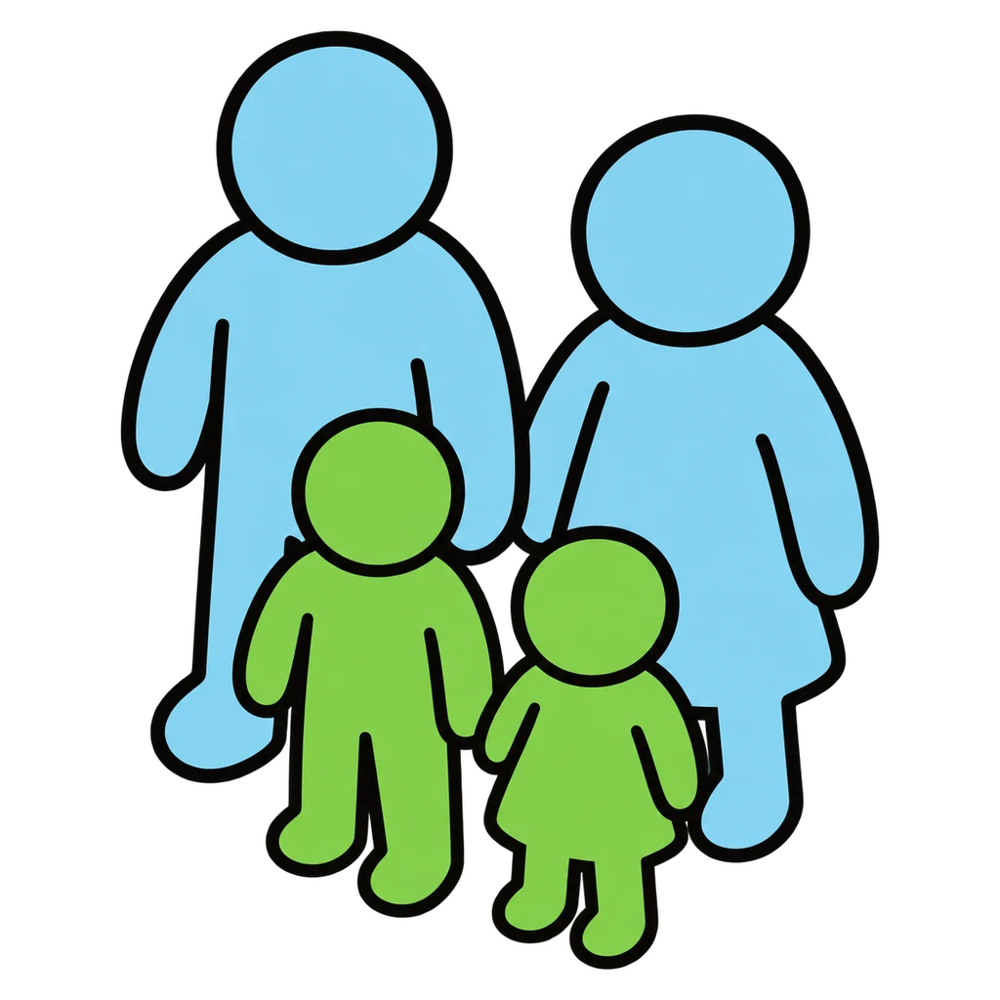
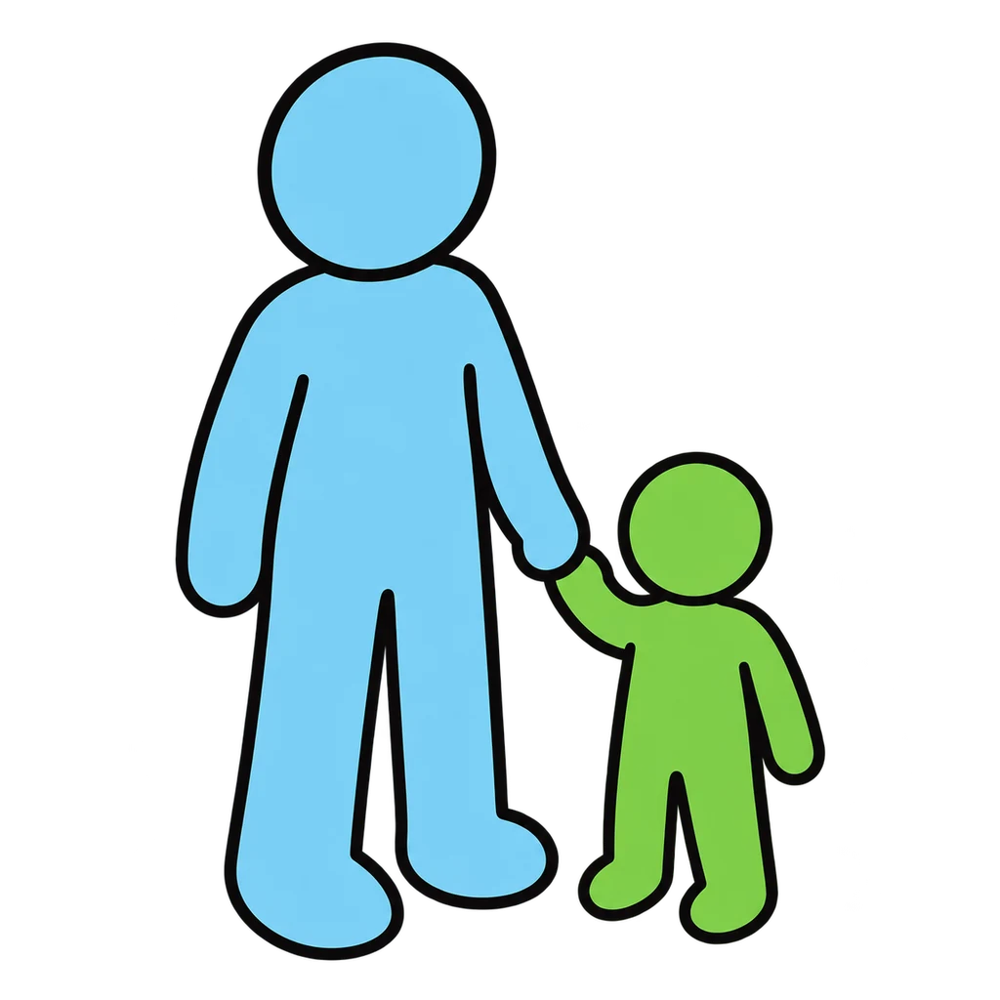
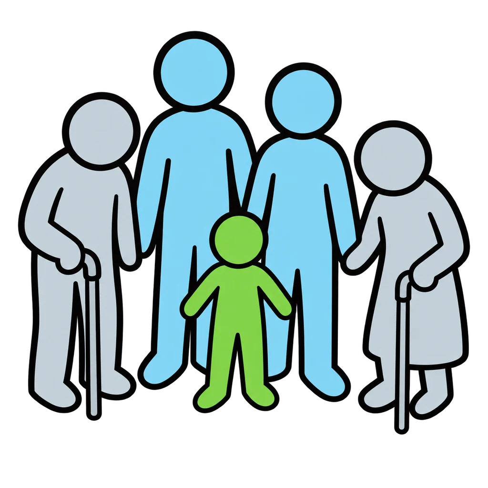
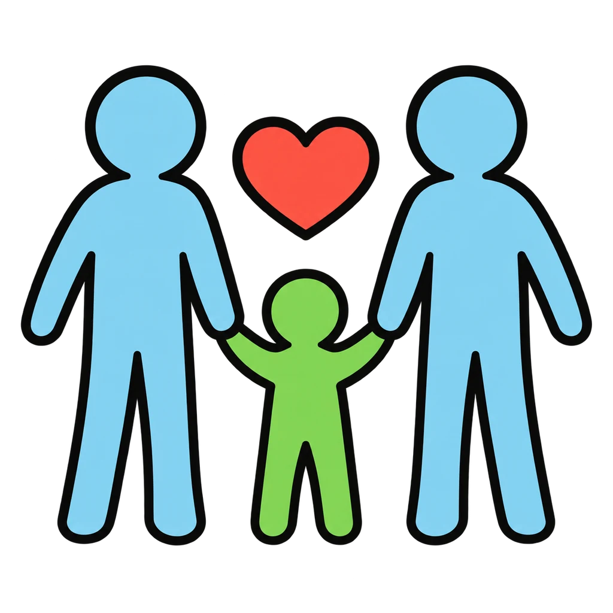
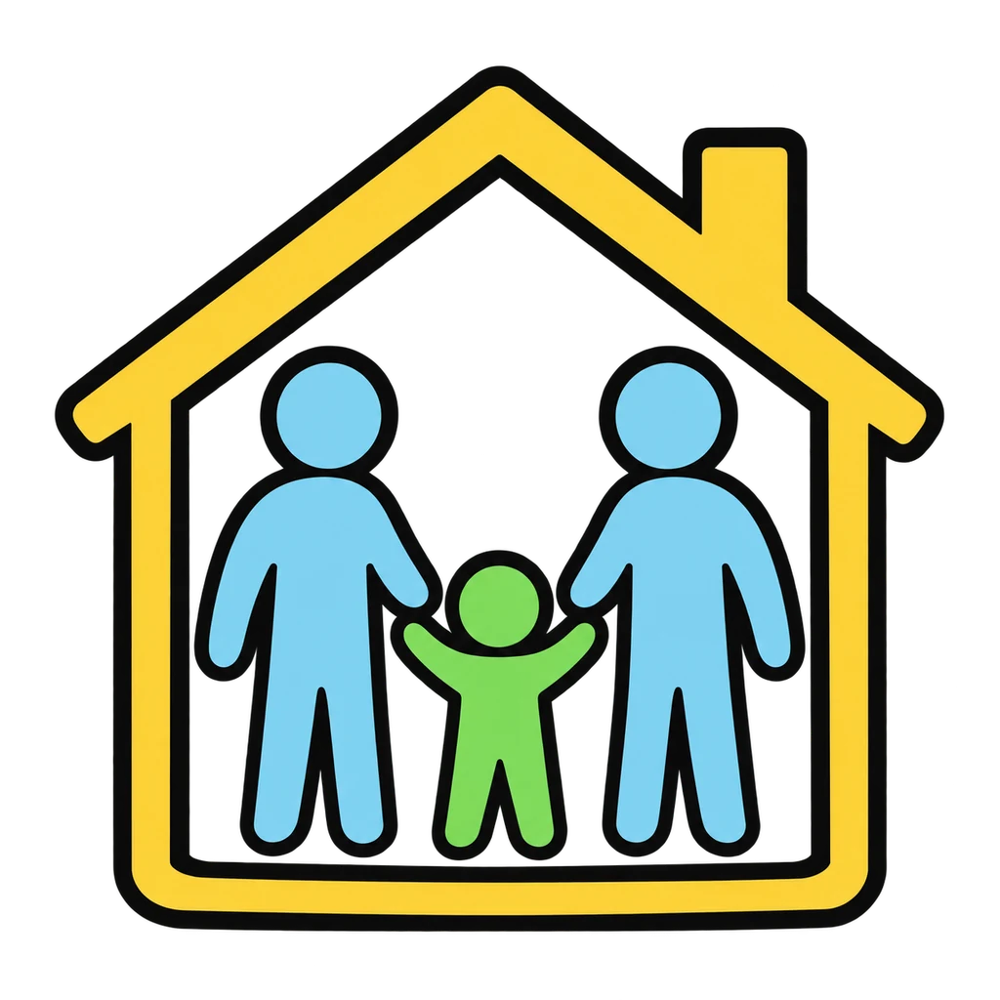
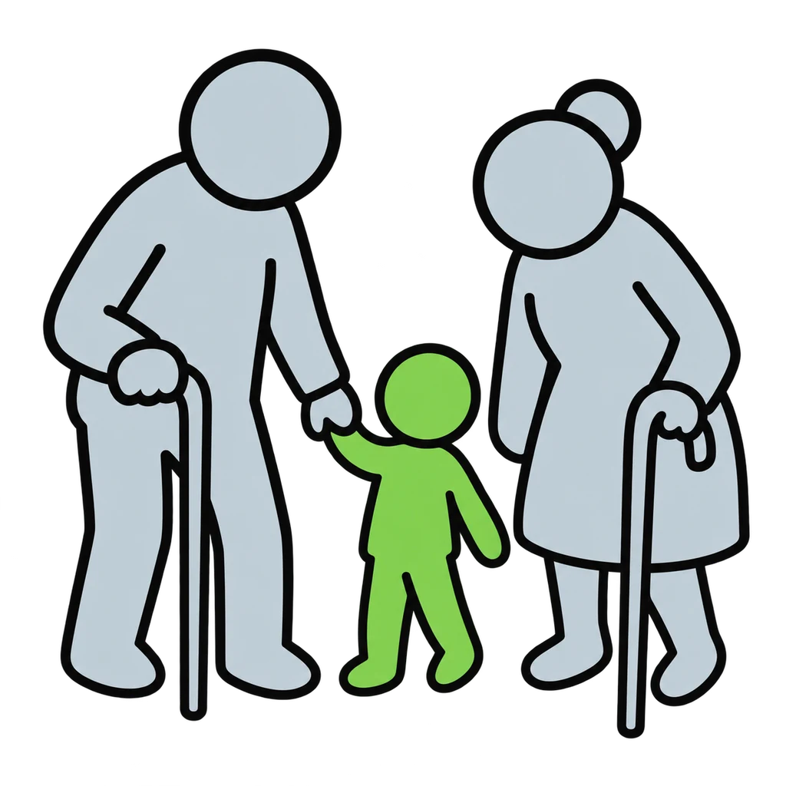
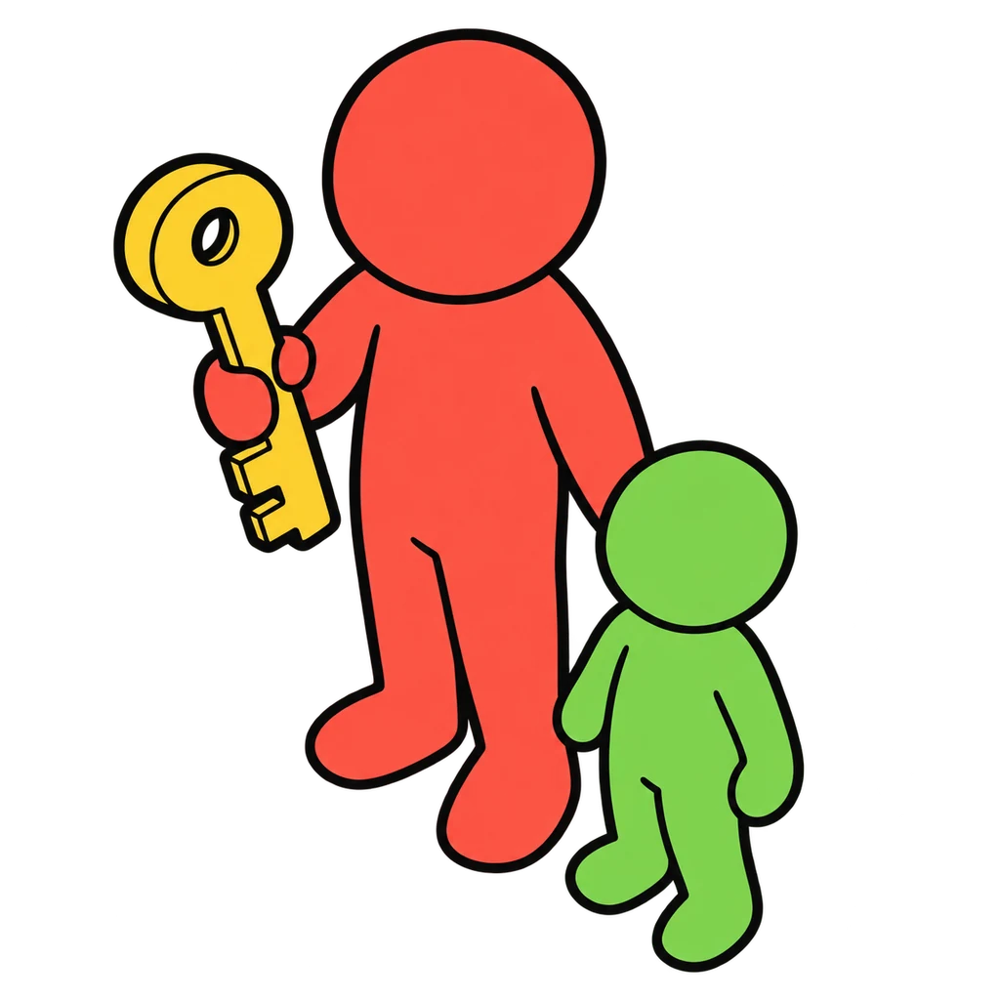
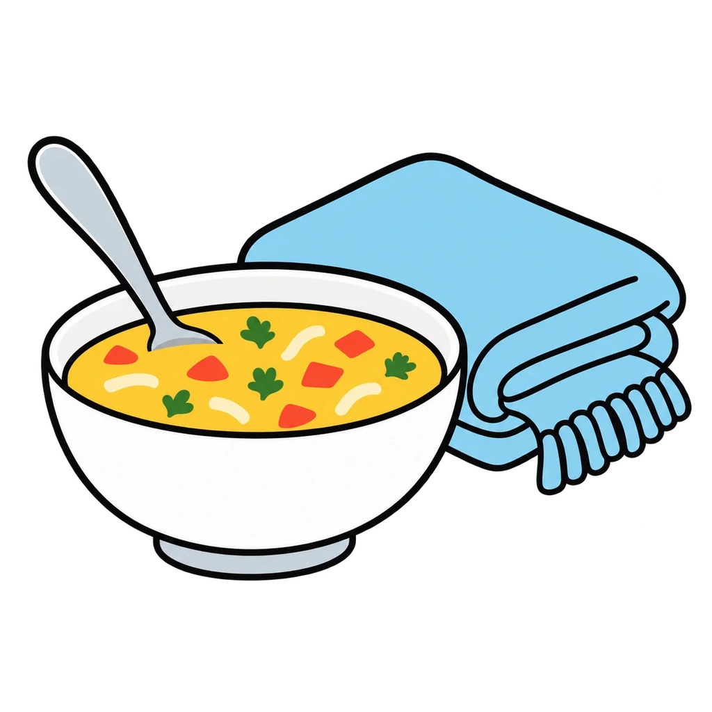

Reviews Lesson 3.14. Family Shapes reviews Lesson 3.14: the structures chart, the twelve scenarios, the four jobs, and the life cycle loop. Use it the day after the lesson or as review for Unit 3 Test items 14, 15, and 20. Every family is fictional and the scenarios are the handout's own; no student's family is ever the example, and the end panel repeats the lesson's line that no one structure is better because every one does the four jobs. Two scenarios (Nadia, Jonah) accept the key's second structure.

Family Shapes
A made-up family scenario or a definition appears. Tap the family structure from eight pictures. Then tap the six life cycle stages into order around a loop, and match each job: care, teach, provide, belong.
How to play
- A family is defined by what it does, not by who is in it. Every one of these is a family because every one of them does the four jobs.








Done
The ones to study:
Worth knowing by heart:
- The four jobs every family does: care, teach, provide, belong (Handout 03.14 Part 1)
- The structures chart, nine rows (Part 2)
- The family life cycle, a loop not a ladder, and the transitions (Part 5)
- No one family structure is better than another because every one of them does the four jobs